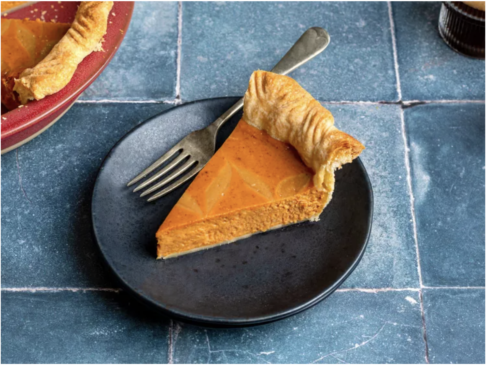

Pumpkin Pie with Espresso Cream Cheese Swirl

Description
Pumpkin pie is an all-time holiday dessert classic, but maybe it's time for a glow up. For Thanksgiving this year, Allrecipes challenged 5 of our favorite bakers to upgrade our basic pumpkin pie recipe. The rules? The base ingredients needed to stay the same, and the bakers could only use five additional ingredients for their upgrade. Check out the rest of the pumpkin pie recipes from our challenge, here.
Ingridients
- 1 (9 inch) unbaked pie crust
- 1 (15 ounce) can pumpkin puree
- 1 (14 ounce) can sweetened condensed milk
- 2 large eggs
- 2 ½ teaspoons pumpkin pie spice
- 1 pinch salt
- 4 ounces cream cheese, softened
- ¾ teaspoon instant espresso powder
- 1 large egg yolk
- 1 teaspoon vanilla extract
Steps
- Preheat the oven to 425 degrees F (220 degrees C). Fit pie crust into a 9-inch pie dish and place it on a baking sheet.
- Combine pumpkin puree, condensed milk, eggs, pumpkin pie spice, and a pinch of salt in a large bowl; mix until combined. Pour into the pie crust, leaving a bit of room at the top.
- Combine cream cheese, granulated sugar, espresso powder, egg yolk, vanilla, and a pinch of salt in a medium bowl; whisk until combined and smooth.
- Dollop the cream cheese mixture over the pumpkin pie filling then use a toothpick or thin knife to swirl the cream cheese into the pumpkin.
- Bake in the preheated oven for 15 minutes. Reduce heat to 350 degrees F (175 degrees C) and continue to bake until filling is set, 35 to 40 minutes. Remove from the oven, set on a wire rack, and cool completely before serving.